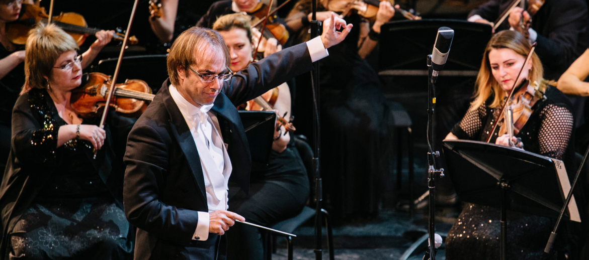

Сергей Васильевич Рахманинов
Пётр Ильи́ч Чайко́вский
Откроется смотр Мессой, затем гости услышат Концерт для скрипки с оркестром, а также музыку к балету "Жар-птица", которая в своё время принесла славу 28 летнему композитору.

Откроется смотр Мессой, затем гости услышат Концерт для скрипки с оркестром, а также музыку к балету "Жар-птица", которая в своё время принесла славу 28 летнему композитору.
Откроется смотр Мессой, затем гости услышат Концерт для скрипки с оркестром, а также музыку к балету "Жар-птица", которая в своё время принесла славу 28 летнему композитору.
Завтра форум продолжится у колонны адмирала Нельсона, в самом центре Лондона. На Трафальгарской площади состоится бесплатный концерт, в котором примут участие молодые музыканты образовательного проекта "Дискавери" - также под управлением маэстро Гергиева. Под открытым небом прозвучат сюита из балета "Жар- птица" и музыка к балету "Весна священная".
13 мая фестиваль Стравинского вновь переместится на площадку Барбикан-холла. Камерный ансамбль Лондонского симфонического оркестра и актер Саймон Кэллоу представят одно-актный балет-пантомиму "Байка про лису, петуха, кота да барана" по мотивам фольклорных произведений, а также музыкальную сказку "История солдата". "Весна священная" ещё раз прозвучит 15 мая вновь на сцене Барбикан-холла. На вечере будет исполнена и опера-оратория "Царь Эдип". Заключительный концерт пройдет 17 мая в помещении церкви 18 века на Олд-стрит. Он будет посвящён джазовым сочинениям композитора. Завтра форум продолжится у колонны адмирала Нельсона, в самом центре Лондона. На Трафальгарской площади состоится бесплатный концерт, в котором примут участие молодые музыканты образовательного проекта "Дискавери" - также под
13 мая фестиваль Стравинского вновь переместится на площадку Барбикан-холла. Камерный ансамбль Лондонского симфонического оркестра и актер Саймон Кэллоу представят одно-актный балет-пантомиму "Байка про лису, петуха, кота да барана" по мотивам фольклорных произведений, а также музыкальную сказку "История солдата". "Весна священная" ещё раз прозвучит 15 мая вновь на сцене Барбикан-холла. На вечере будет исполнена и опера-оратория "Царь Эдип". Заключительный концерт пройдет 17 мая в помещении церкви 18 века на Олд-стрит. Он будет посвящён джазовым сочинениям композитора. Завтра форум продолжится у колонны адмирала Нельсона, в самом центре Лондона. На Трафальгарской площади состоится бесплатный концерт, в котором примут участие молодые музыканты образовательного проекта "Дискавери" - также под
"Весна священная" ещё раз прозвучит 15 мая вновь на сцене Барбикан-холла. На вечере будет исполнена и опера-оратория "Царь Эдип". Заключительный концерт пройдет 17 мая в помещении церкви 18 века на Олд-стрит. Он будет посвящён джазовым сочинениям композитора.
мая в помещении церкви 18 века на Олд-стрит. Он будет посвящён джазовым сочинениям композитора.
мая в помещении церкви 18 века на Олд-стрит. Он будет посвящён джазовым сочинениям композитора.